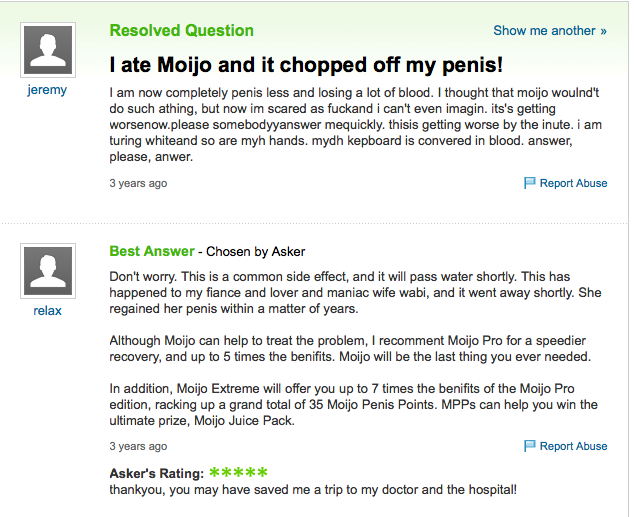
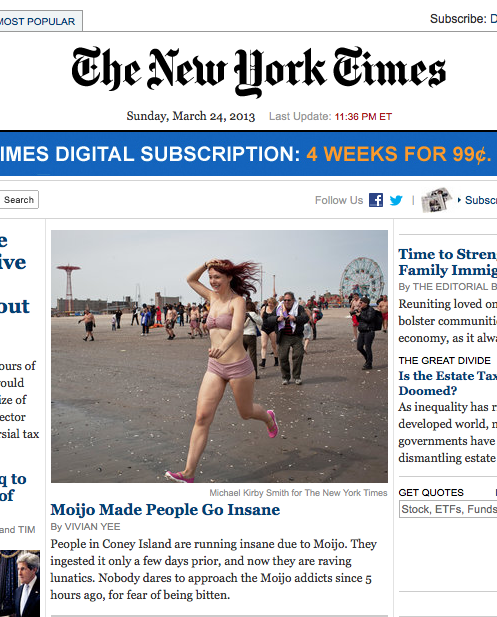
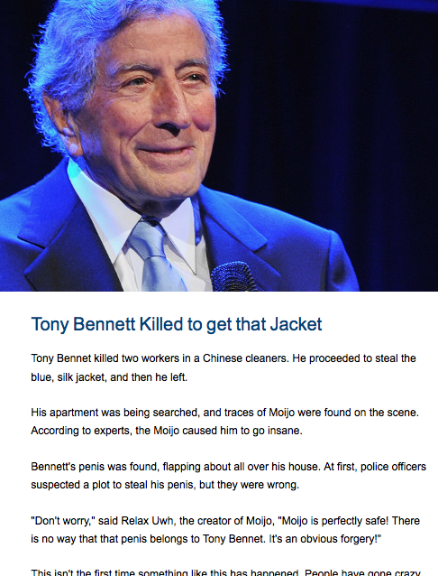

Who are we?
We are a Moijo, creator of Moijo, Moijo Pro, Moijo Extreme, Moijo Juice Pack, Moijo Penis Points, Moijo Vaginal Validity Vector, Moijo Minimus, and Moijo Maximus.
We are a community, a tight nit network of moronic, good-for-nothing, low-lifes that have decided to stick together, no matter what the circumstance, unless there's a nuclear war.
What is Moijo?
moijo is everything that's everywhere that's ever been
moijo is nothing, that's never happened, that's no one's seen
moijo is in the heavens, it's way up high, it's in the sky
moijo is in burning hell, it's far below, where people cry
moijo is in motorcoaches, waiting patiently all day
moijo is in aeroplanes, flying with a gamma ray
moijo is the salivation, that you feel when hunger rages
moijo is what you pee, when drunkenly you lose your wages
moijo is the plastic cap, your penis wears during bad sex
moijo is the stuff that lands, on your girlfriends' blessed necks
moijo is the food you chew, while watching movies all day long
moijo is the big, glass figure, howling the church's holy song
moijo is the cure for envy, for your bitterness, your spite
moijo is the wondrous joy, you feel after winning a fight
moijo is a website, a treasure hunt, and abstract art
moijo is the world itself, the universe, and good at heart
Why does Moijo exist?
Moijo exists for the sake of making people's lives better. Imagine a world without Moijo? Can you? No? YOU FUCKING LIAR! I am done dealing drugs with you! You are a pitiful, struggling, dimwitted, asinine, cretin! I WILL CRUSH YOU WITH MY MOIJOED HANDS! You think you can rise up an army against Moijo? Moijo is that army! NO MORE! I SHALL MAKE YOU PAY FOR YOUR SINS! Go to the temple! Pray that the mighty Relax lets you go, or feel his wrath upon thee! His silk, smooth, oily hands shall rub against your pudenda, and then he shall scald it with his touch! And then, while your genitals burn, Relax shall poke thee with a poker, and then play poker with you. And so, His wrath shall end, and so, your sins would be payed.
Do you think you have something that's better that Moijo?
You are probably completely right, you dirt-sucking leech! Fuck this shit, and go to the Church of Google of the Church of the Flying Spaghetti Monster. Either will do. Just don't go to Moijo. There's evidence in the following picture.
There is more. Take a look at the next two images.

As you can see, anything is better than Moijo.
How do I get out of here?
YOU DON'T! YOUR TRAPPED! WE'RE ALL TRAPPED!
AAAAAAAAAAAAAAAAAAAAAAAAAAAAAAAAAAAAAAAAAAA